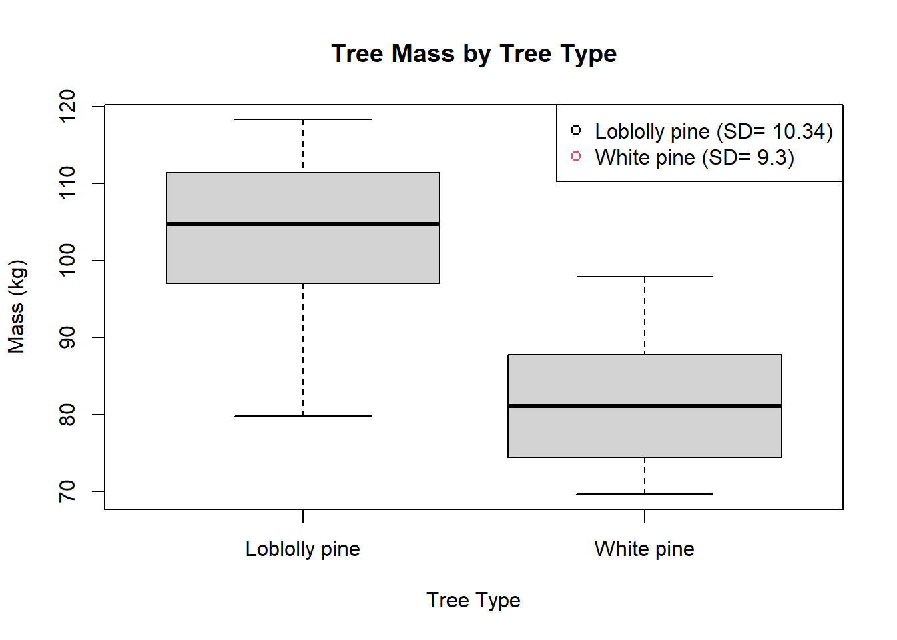

T-Test in RStudio
T-Tests in RStudio: Loblolly vs. Pine Trees
T-Testing: When and Why to Use T-Tests
What is a t-test
A t-test is a statistical test used to determine if there is a significant difference between the means of two groups. For example, let’s say you wanted to know if there is a significant difference in the average mass between Loblolly pine and White pine trees. You could use a t-test to compare the mean mass of a group of Loblolly trees to the mean mass of a group of White Pine.
The t-test generates a t-value, which is a measure of the difference between the means of the two groups relative to the variability within each group. The t-value is then compared to a critical value from a t-distribution table, based on the degrees of freedom (which is determined by the sample size of each group).
- If the calculated t-value is greater than the critical value from the table, then we can conclude that there is a significant difference between the means of the two groups. In other words, the difference between the two groups is unlikely to be due to chance.
there are different types of t-tests, depending on the nature of the data and the research question. The two most common types are the independent samples t-test, which compares the means of two independent groups, and the paired samples t-test, which compares the means of two related groups (e.g. pre-test and post-test scores for the same individuals).
Short Summary of the Math
First, you need to calculate the sample means and sample standard deviations for each group. Let’s call the sample means “x-bar 1” and “x-bar 2” and the sample standard deviations “s1” and “s2.”
Next, you calculate the standard error of the difference between the means, which is the standard deviation of the sampling distribution of the difference between the means. This can be calculated using the formula:
SE = sqrt(s1^2/n1 + s2^2/n2)
“n1” and “n2” are the sample sizes for each group.
Then, you calculate the t-value using the formula:
- t = (x-bar 1 - x-bar 2) / SE
This t-value represents the difference between the means of the two groups in terms of standard errors.
Finally, you compare the calculated t-value to a critical value from a t-distribution table, based on the degrees of freedom (df). The degrees of freedom for an independent samples t-test are calculated as:
df = n1 + n2 - 2
“n1” is the sample size of the first group, “n2” is the sample size of the second group, and 2 represents the number of sample means being estimated.
If the calculated t-value is greater than the critical value from the table, then you can reject the null hypothesis and conclude that there is a significant difference between the means of the two groups. If the calculated t-value is not greater than the critical value, then you fail to reject the null hypothesis and conclude that there is not enough evidence to support a significant difference between the means of the two groups.
The critical value in a t-test represents the value that divides the distribution of t-values into two regions: the region of t-values that are unlikely to occur by chance (i.e., the rejection region) and the region of t-values that are likely to occur by chance (i.e., the non-rejection region).
The critical value is determined by the degrees of freedom (df), which is based on the sample sizes of the two groups being compared. The larger the sample sizes, the larger the degrees of freedom and the smaller the critical value. Conversely, the smaller the sample sizes, the smaller the degrees of freedom and the larger the critical value.
- Critical value is calculated based off of degrees if freedom via a distribution table
Viewing the data
- always start with viewing a table what the data contains and generating an exploratory graph to show the correlation you hope to predict
Creating a Table
datum <- read_csv("C:/School/23SPDAY/FieldMethodsandTech/Practice Data/linear regression/t-testing/Class Activity 8.csv",
show_col_types = FALSE)
head(datum) %>%
kable(digits = 4) %>%
kable_styling(bootstrap_options = "striped", "hover")| Tree | Mass |
|---|---|
| Loblolly pine | 88.5256 |
| Loblolly pine | 109.6834 |
| Loblolly pine | 102.9445 |
| Loblolly pine | 111.3871 |
| Loblolly pine | 113.4311 |
| Loblolly pine | 79.7784 |
Generating a Graph
# Calculate standard deviation for each tree type
sd_values <- tapply(datum$Mass, datum$Tree, sd)
plot(Mass~as.factor(Tree), data=datum,
main = "Tree Mass by Tree Type",
xlab = "Tree Type",
ylab = "Mass (kg)" )
legend("topright", legend = paste(unique(datum$Tree),
" (SD= ", round(sd_values, 2), ")", sep = ""),
pch = 1, col = seq_along(unique(datum$Tree)))
Running a t-test
results=t.test(Mass~Tree,data=datum,var.equal=FALSE) ### run a t-test, call results 'results'
#default is var.equal=FALSE which is standard for t-tests; allows for unequal variance of groups
results ### prints results - Note absence of 'summary' statement - one of few tests that doesn't use 'summary'
Welch Two Sample t-test
data: Mass by Tree
t = 5.9739, df = 26.182, p-value = 2.561e-06
alternative hypothesis: true difference in means between group Loblolly pine and group White pine is not equal to 0
95 percent confidence interval:
14.35215 29.40224
sample estimates:
mean in group Loblolly pine mean in group White pine
103.54574 81.66855 #Note results don't provide estimate of effect!